Uncrating DxI Instrument from Wooden Crate
This procedure provides instructions for removing the DxI instrument from a wooden shipping crate.
Required Materials:
- Pliers
- Hammer
- Scissors or box cutter
- Wrench, socket, open-end, or adjustable for 3/4-in nut
Note: To uncrate an instrument from a cardboard crate, refer to the
Installing: Uncrating DxI Instrument from Cardboard Crate procedure.
-
Open and secure the ramp.
-
Position the crate so there is room to open the crate and remove the instrument safely.
You need enough room to:
- Remove the rear panel from the crate,
- Place the ramp into position,
- Remove the instrument from the crate, and
- Roll the instrument down the ramp and maneuver it.
-
Remove the eight wire corner clamps from the crate front panel.
The front panel becomes the ramp.Note:
- Support the ramp to keep it from falling.
- Hold the crate corner clamps to prevent them from springing off during removal.
- Do not damage or discard the corner clamps because they must be reused.
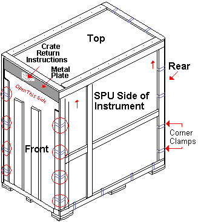
Note: While holding onto the corner clamps, grasp them with the pliers and pull them off the crate.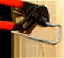
- Lift the ramp from the crate and set the wooden end onto the floor, then lay the ramp down onto the floor.
-
Lift and position the wooden end of the ramp onto the notched ledge in the crate end surface with the metal plate end on the floor.
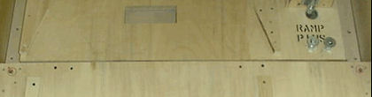
-
Locate the two ramp pins. Secure the ramp to the crate base by inserting the pins through the holes in the ramp panel and into the holes in the crate base.
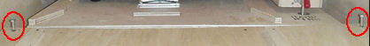
Note: It is normal for the ramp pins to be raised from the surface of the ramp even when they are fully inserted. -
Proceed to the rear of the crate and remove the 11 corner clamps to remove the rear panel.
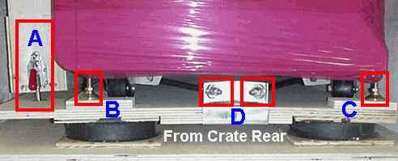
- Lift the rear panel away from the crate and rest it safely against a solid surface.
- Cut the tie-wrap located on the rear SPU toggle clamp.
- Pull forward and downward on the toggle clamp (A) to lower the rear of the SPU support.
-
Position the crate so there is room to open the crate and remove the instrument safely.
-
Release the instrument from the crate.
-
Loosen the 3/4-in lock-nuts on the instrument leveling feet (B) and (C), then rotate the feet to adjust them upward 1 inch.
Caution: To avoid damaging the panel above the leveling feet, do not rotate the feet upward more than 1 inch.
- Remove the two 3/4-in lock-nuts and washers on the two tie-down rods (D), then remove the rods.
-
Enter the crate on the ramp end, and then cut the tie-wrap located on the front toggle clamp of the SPU. Pull forward and downward on the toggle clamp (A) to lower the front of the SPU support.
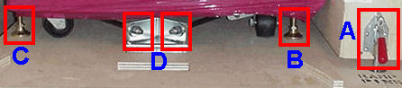
-
Reach into the crate from the front end, grasp the handle of the SPU support, and then pull the support toward the ramp and out of the crate.
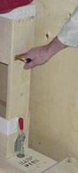
-
From the front of the crate, loosen the 3/4-in lock-nuts on the instrument leveling feet (B) and (C), and then rotate the feet to adjust them upward 1 inch.
Caution: To avoid damaging the panel above the leveling feet, do not rotate the feet upward more than 1 inch.
-
From the front of the crate, remove the two 3/4-in lock-nuts and washers on the two tie-down rods (D), and then remove the rods.
Note: The metal floor bracket is not removable and must be left in the hole in the base of the crate while removing the instrument.
-
Loosen the 3/4-in lock-nuts on the instrument leveling feet (B) and (C), then rotate the feet to adjust them upward 1 inch.
-
If applicable, remove the long sample pipettor gantry box from the upper right corner of the crate by pushing the box from the rear of the crate.
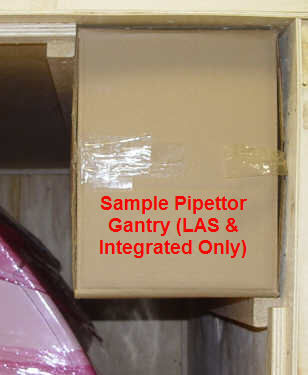
-
Remove the instrument from the crate.
-
Verify that the rear feet are not raised as high as the front feet.
Caution: Do not raise the rear leveling feet as far as the front feet. Do not force the rear feet beyond the point where restriction is felt.Caution: The person at the rear of the instrument must take care to avoid tripping on the floor bracket near the front of the instrument.
- Position one person at each end of the instrument.
-
Carefully push the instrument out of the crate from the rear, while pulling the instrument out of the crate from the front.
Warning: Because of the weight of the instrument (1200 lb /544 kg), use caution when moving the instrument up the ramp. To avoid personal injury or instrument damage, a minimum of two people must control the instrument as it is moved up the ramp.
- If the instrument will remain in this location, loosen the locking nut on one of the leveling feet, and rotate the foot to the floor to prevent the instrument from rolling.
-
Remove the stretch wrap from the instrument.
The best place to cut the wrap is at the seam between the upper front covers. Cut from top to bottom, and remove the wrap.
- Inspect the instrument exterior. Document on the service order any damage that may have been caused by shipping and handling.
-
Verify that the rear feet are not raised as high as the front feet.
-
Return the wooden crate (NAO only).
-
Place two tie-down rods into each of the two floor brackets, then drop the rods into the holes in the floor.
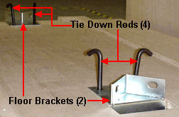
Note: Do not put peripheral packaging materials inside the crate. Return only the crate, the SPU support, and the hardware used to secure the instrument to the crate. -
Remove the two ramp pins from the ramp. Place the two nuts and the two washers from the tie-down rods onto each pin, then insert the pins into the holes labeled Ramp Pins.
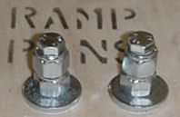
-
Place the SPU support on its side.
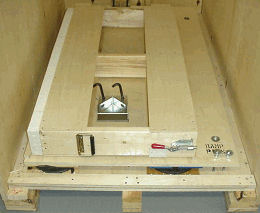
- Attach all removed panels (including the ramp) using the removed corner clamps.
- Remove all carrier and ship-to crate labels and the shock watch.
-
Apply the return ship-to labels included in the return packet located on the front SPU side of the crate.
Note: The crate return label is addressed to: Packnet LTD, 3535 Industrial Dr, Faribault, MN 55021 (not Chaska). Packnet inspects and reconditions (if necessary) the crates before reuse.
- Complete the shipped-from portion of the bill of lading (BOL) included in the packet.
-
Call Conway Central at 1-800-421-4007 to pick up the crate.
The customer is not responsible for returning the crate or paying the cost of shipping. Beckman Coulter is billed as the shipper.Note: Have the completed BOL available when calling Conway. Conway will ask for the pick-up location listed on the BOL. You might be given another number to call for pick-up, so have a pen available.
- Provide the completed BOL to the shipping or receiving supervisor at the facility from where the instrument is being shipped. Conway Central usually picks up the crate within 24 hours.
-
Place two tie-down rods into each of the two floor brackets, then drop the rods into the holes in the floor.